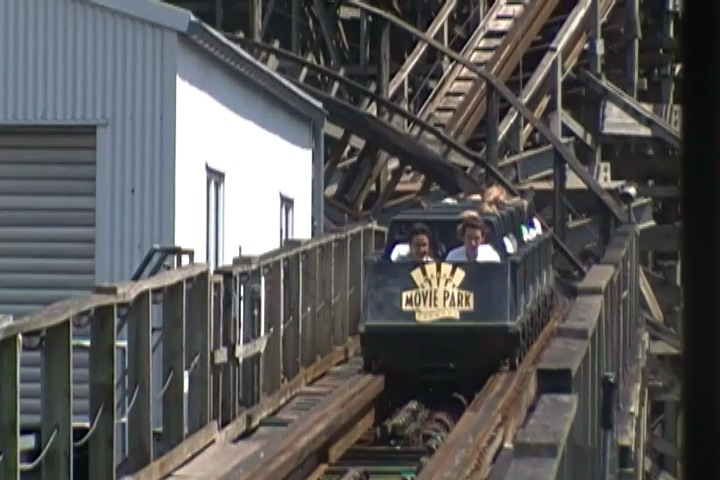
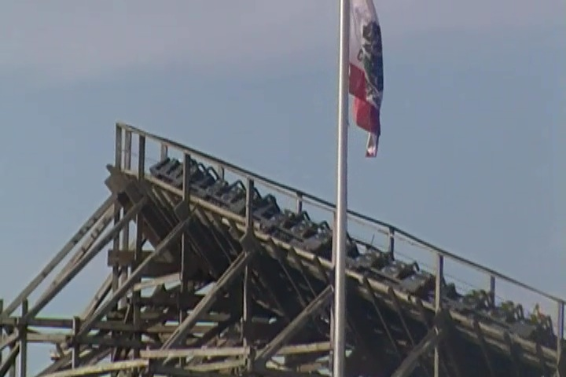

| |
Bandit Review

We're here at Movie Park Germany. Today's ride we'll be reviewing for you is Bandit. When you first walk up to the ride, you don't really think much about the ride. It just looks like your typical wooden coaster. Oh wait. It's one of many Cyclone Clones. Hopefully, this will be one of the good ones. If you are foolish enough to believe such a thing, then this ride has a real nasty surprise in store for you. You poor naive fool. =) Not only is this ride horrible, but it's one of the worst coasters we've ever ridden as well as the worst wooden coaster we've EVER had to ride. It is THAT bad. We get in the cars, and pull down the restraints. Now, these are the same old trains that Son of Beast used to have. Back when it still had the loop. It was a sh*tty enough ride when I rode it, but I heard so much worse things about the ride when it had these trains. Oh boy. I am not looking foreward to this. We head out the station and roll around a turn. We get a couple of laterals with some pain, as well as a little ass massage. Warning, if that ever happens in the pre-lift. You better brace yourselves, because this ride is going to be F*CKING AWFUL!!! So yeah. We climb the lifthill. Now if we just close our eyes, we can pretend that we're on a better coaster, like one of the wooden coasters we actually love. Hell, even imagining ourselves on f*cking Grizzly would be an improvement!! At least Grizzly only sucks in the fact that it's as boring as watching paint dry. This ride is more like being beaten senseless with a paint bucket and then pouring paint into the open wounds while your wall is still begging for a good coat of paint. Well, we're at the top and it's time to head down the first drop. SON OF A BITCH!!! OW OW OW OW OW OW OW OW!!!!! The shaking has already begun, and it already feels like the train is going to rattle itself apart. We rise up into another turnaround and SLAM!!! A big painful jerk to the side as we get some laterals. Now, we do lose a lot of speed here, but not enough to slow us down and give us a chance to nurse our wounds (Never in a million years would I think that I'd be begging for the ride to slow down). And sure enough, we drop back down and SHUFFLE!!! OW!!! Now, we actually get some headbanging here, except it's not your normal headbanging. So how can you have headbanging on a ride with only lap bars and no OTSRs? Simple instead of your head shaking back and forth and hitting the OTSRs, your head is rocking back and forth and hitting the rock solid headrest with no cushioning whatsoever. Hopefully, they sell advil here. We go over an airtime hill. Except there is no airtime. Only shuffling and back and forth headbanging. GOD DAMN IT!!! OW!!!! We head around another turnaround. Now finally, the ride is slowing down, and the back and forth is only mild at this point. A break!! Thank god!! But nope!! We head down another drop and back into hell we go!!! NO!!!! We regain our speed and the shuffling and headbanging rattles on. We go through another hill with no airtime, but plenty of pain. There is no shortage of pain and shuffling on this ride. I'm freaking amazed that the train hasn't completely been rattled apart and we haven't fell to our deaths yet. We head around another turn underneath the structure. With plenty more painful laterals and shuffling to go with us. All in all, you're just another bitchslap from this nightmare of a ride. We head around another hill that is just terrible. This ride almost seems like it's a remnant from Nazi...OK. That's too far. I excel in dark comedy and make many horrible tastless jokes. But that's too far. I'm sorry. Nevertheless, THIS RIDE IS F*CKING AWFUL!!! We head around another horrible hill and endure some terrible laterals underneath the structure. WHAT!!? I THOUGHT THE RIDE WAS SUPPOSSED TO BE OVER BY NOW!!! Is this just punishment for my aborted failure excuse of a joke? Again, I'm sorry!!! I'm sorry for everything I ever did wrong!!! Just please let this ride be over!!! But nope. Two bunny hops. No airtime. Just OUCH!!! We go around a turnaround, in tears at this point, when we see it. The brake run!! SANCTURAY!!! SANCTUARY!!! Have I mentioned that I f*cking hate this ride? I did? Well I'll say it again. I F*CKING HATE THIS RIDE!!! IT IS F*CKING AWFUL!!! Easily the worst wooden coaster we've ridden and one of the worst coasters we've ridden period. It's in the Bottom 3 for a reason. I don't care if you're a die hard credit whore. I don't care if you're a woodie nut. I don't care if there's no line. I don't care if it's the only ride open in the park. DO NOT RIDE BANDIT!!! You'll be sorry if you do.
1/10
Location: Movie Park Germany
Opened: 1999
Built by: Roller Coaster Corporation of America
Last Ridden: June 28, 2012
Bandit Photos


Home
|